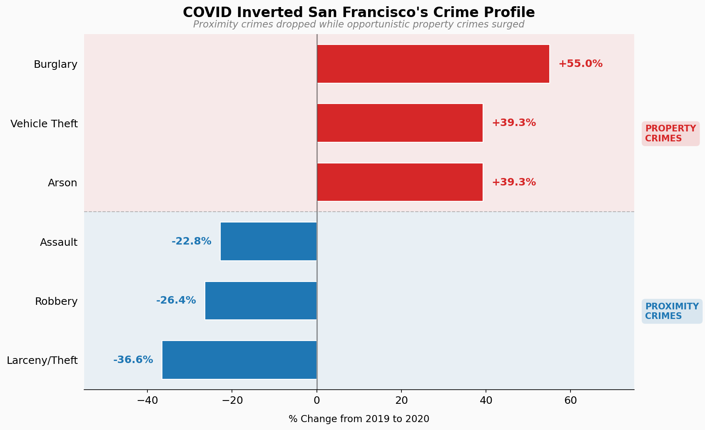

San Francisco Crime Data
How empty streets changed what got stolen in San Francisco during COVID-19
In March 2020, San Francisco's streets emptied overnight. Within weeks, foot traffic in the Financial District dropped 90%. BART ridership collapsed. The city that never sleeps went quiet.
Crime statistics from that period show something counterintuitive: total reported crime dropped, but certain categories exploded. The pandemic didn't stop opportunistic criminals—it just changed their targets. And some of those changes have proven remarkably persistent.
This analysis uses 1,048,575 incident reports from the San Francisco Police Department, spanning 2003 to 2025. The dataset merges two SFPD reporting systems—historical records (2003-2018) and the current system (2018-present)—unified into consistent crime categories. I focus primarily on 2019-2023 to isolate pandemic effects from longer-term trends.
The first year of the pandemic created a near-perfect natural experiment. With shelter-in-place orders in effect, San Francisco saw two distinct patterns emerge: crimes that require victim proximity—robbery, assault, pickpocketing—plummeted. But crimes targeting unattended property surged.
Burglaries jumped 55%. Vehicle theft rose 39%. At the same time, larceny (which includes shoplifting) fell 37%, and robberies dropped 26%. The pattern is clear: remove people from the equation, and you remove both witnesses and certain types of targets.

Figure 1
The pandemic inverted San Francisco's crime profile. Crimes requiring victim proximity—robbery, assault, larceny—fell 20-35% as people stayed home. But property crimes targeting unattended vehicles and buildings surged, with burglaries up 55%. Empty streets don't mean safety; they just shift who becomes a target.
The crime shift wasn't just categorical—it was spatial. With commuters gone, downtown San Francisco saw vehicle theft actually decrease. The Central district, home to the Financial District and Union Square, recorded 3.4% fewer car thefts in 2020 than 2019.
But the outer residential neighborhoods told a different story. Ingleside, a residential district in the city's south, saw an 83% surge in vehicle theft. Northern district jumped 51%. These areas weren't empty—people were home, working remotely. But their cars sat unattended on residential streets, sometimes for days at a time.
Figure 2
Vehicle theft didn't just increase—it moved. Downtown (Central district) actually saw a 3% drop as commuters vanished, leaving no cars to steal. Meanwhile, Ingleside saw an 83% surge as residential cars sat unattended while owners worked from home. Click each district for details.
Perhaps most striking is what happened after the lockdowns lifted. By 2022, most pandemic restrictions were gone. People returned to offices—at least part-time. You might expect crime patterns to revert to their pre-pandemic baseline.
They didn't. As of 2023, vehicle theft remained 63% above 2019 levels. Burglary stayed elevated at 116% of baseline. Meanwhile, larceny/theft—once the city's most common crime category by far—has never recovered, sitting at just 54% of 2019 volume even in 2024.
The pandemic may have revealed a new equilibrium. Remote and hybrid work persists. Fewer people ride transit. Streets remain quieter than they were in 2019. The conditions that enabled the 2020 surge haven't fully reversed.
Figure 3
Four years later, the shift persists. Vehicle theft peaked at 163% of 2019 levels in 2023 and remains elevated. Larceny/theft—once dominant—sits at just 54% of pre-pandemic volume. Use the buttons to compare property vs. violent crimes. The pandemic didn't create a temporary spike; it revealed a new equilibrium.
Crime statistics measure reported crime, not actual crime. This distinction matters enormously when interpreting pandemic-era data.
Two external factors help explain these patterns. First, San Francisco's March 17, 2020 shelter-in-place order—among the first in the nation—provides a clean before/after boundary. The crime divergence aligns precisely with this date.
Second, California's Proposition 47 (2014) reclassified thefts under $950 from felonies to misdemeanors. Some argue this reduced reporting incentives for low-value thefts. The larceny trend warrants careful interpretation: are fewer thefts occurring, or are fewer being reported because consequences seem minimal?
What the data shows clearly is this: the pandemic was a natural experiment in criminology. Remove crowds, and you remove both witnesses and certain types of targets. Opportunistic crime doesn't disappear—it adapts.